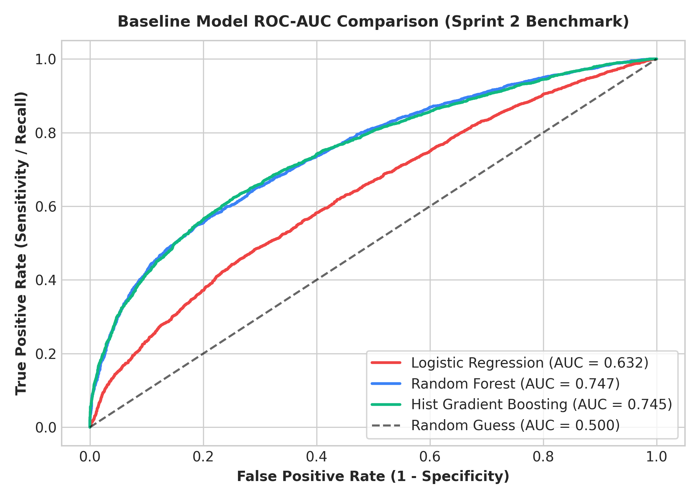
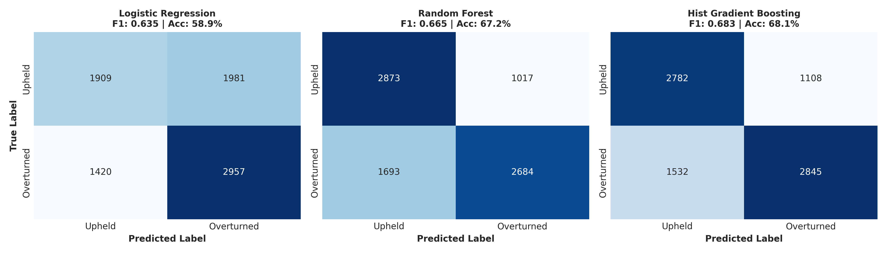

An Explainable Machine Learning Approach Using California DMHC Independent Medical Review (IMR) Data
Sprint 2 developed an automated, reproducible data engineering pipeline and benchmarked three foundational machine learning architectures on 41,332 sanitized patient review records. Our methodology isolates retrospective data leakage (unmasking physician narrative findings) and enforces strict 80/20 stratified partitioning.
Models evaluated on held-out test data partitioned with stratified sampling preserving the exact 52.94% Overturned / 47.06% Upheld class distribution:
| Model Architecture | Accuracy | Precision (Overturned) | Recall | F1-Score | ROC-AUC |
|---|---|---|---|---|---|
| Random Forest (100 Trees, Depth 12) | 67.22% | 72.52% | 61.32% | 0.665 | 0.747 |
| Hist Gradient Boosting (100 Iterations) | 68.07% | 71.97% | 65.00% | 0.683 | 0.745 |
| Logistic Regression (Standardized Baseline) | 58.86% | 59.88% | 67.56% | 0.635 | 0.632 |

